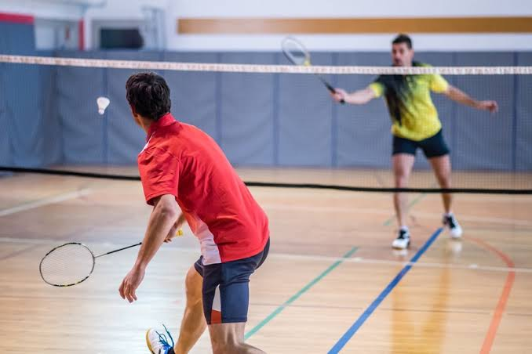
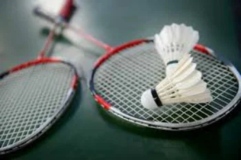

O Badminton é um esporte realizado por duas equipes, formadas por dois ou quatro jogadores dependendo da modalidade e são separadas por uma rede que define o campo onde cada um deve se inserir. O esporte é semelhante ao Tênis, porém ao invés de utilizar bolas utiliza petecas que pesam cerca de 4,74 gramas e 5,50 gramas. O principal objetivo do jogo é colocar a peteca sobre o solo do campo adversário, marcando pontos.

O esporte foi criado na Inglaterra durante o século XIX, através da inspiração de um jogo Indiano chamado Poora, além disso, existia na Grécia um esporte semelhante a esse, na qual utilizava tamborete e peteca.
Com o decorrer dos anos o esporte foi se tornando popular e se espalhou para países de outros continentes como: Ásia, África, América do Norte, entre outros. Até que em 1934 foi criada a Federação Internacional de Badminton (BWF) uma organização internacional que é responsável por administrar e organizar os jogos desse esporte. O primeiro deles foi realizado em uma mansão chamada de Badminton House. Atualmente o esporte é praticado por mais de 170 países e foi na decada de 1990 que o esporte passou a fazer parte de uma das modalidades das Olimpíadas.
O jogo é praticado entre dois ou quatro jogadores, para dois jogadores é chamado de Modalidade Simples e para quatro Jogadores é chamado de Modalidade Duplas.

Página Inicial